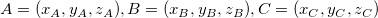

内容 |
曲面の面積
XYZ曲面の表面積を計算します。
これはOriginProのみの機能です。V8.1 SR0
xyzarea iz:=col(c) area:=area;
| 表示 名 |
変数 名 |
I/O および データ型 |
デフォルト 値 |
説明 |
|---|---|---|---|---|
| 入力データ | iz |
入力 XYZRange |
<active> |
面積計算のためのXYZデータを指定します。 |
| area | area |
出力 double |
<> |
面積の結果を出力する場所を指定します。結果は常に結果ログウィンドウに出力されます。 |
このXファンクションは、XYZ曲面の表面積を計算するのに使用します。結果の面積に対する変数を指定することができます。また、結果の面積は常に結果ログウィンドウに自動的に出力されます。
この例では、入力XYZデータ範囲の面積を計算します。
xyzarea -d; を実行し、 xyzarea ダイアログを開きます。
3次元空間で、三角形の面積は
XYZデータの面積を計算するには、最初に三角測量法(下図のような)を実行し、XYZデータの面積は、三角形のそれぞれの面積の合計になります。